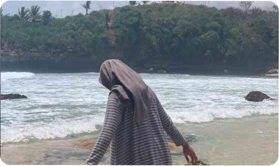

Bingung Mengisi Waktu? Ini Cerita tentang Keterampilan Mengoptimalkan Waktu di Masa Muda Menurut Kak Anis
Pada kehidupan perkuliahan yang begitu sibuk ini, dimana membagi waktu antara perkuliahan dan kepentingan lain seringkali sukar dilakukan. Namun pastinya ada seseorang yang terampil dan mampu memahami seni manajemen waktu dengan baik. Melalui wawancara singkat saya bersama Anis, seorang mahasiswi Universitas Negeri Malang yang memiliki keterampilan membagi waktu dimana setiap detik dihargai dan dimanfaatkan secara optimal. Anis adalah mahasiswi berusia 21 tahun yang memiliki banyak aktivitas dalam sehari-harinya. Anis adalah tipe orang yang senang melakukan banyak aktivitas untuk menghilangkan kejenuhan di era perkuliahan.
Sudah terbiasa menjalani banyak aktivitas dari sekolah menengah atas, maka menurutnya akan berasa aneh jika tidak mengoptimalkan waktunya dengan baik. Dia senantiasa mencari aktivitas baru yang dapat memberikan pengalaman untuk mengembangkan diri. Sekarang ini Anis Tengah aktif mengikuti dua organisasi di kampus. Organisasi yang pertama adalah Himpunan Mahasiswa Departemen dimana dia diamanahi menjadi ketua Divisi Humas dan Infokom. Lalu di organisasi kedua adalah Forum Mahasiswa Daerah Blitar dimana dia diamanahi menjadi ketua umum. Selain itu ditengah menjalani perkuliahan dan organisasi di semester lima, Anis yang merupakan mahasiswa jurusan Pendidikan Guru Sekolah Dasar memanfaatkan ilmu yang sudah didapatnya untuk menjadi guru les di rumahnya. Ilmu dan keahlian yang didapatkannya dari perkuliahannya disalurkan dengan membuka tempat les bagi anak sekolah dasar. Les ini dilakukan setiap weekday mulai jam 6 sampai 8 malam. Akan tetapi ditengah kesibukannya tersebut, Anis tidak serta merta melupakan tugasnya sebagai mahasiswi. Walau jadwalnya lumayan padat, dia masih bisa mengerjakan tugas perkuliahanya dengan baik dan tepat waktu. Jika dirasa senggang maka waktu itu akan dimanfaatkan untuk mengerjakan tugas-tugasnya. Namun ditengah banyaknya aktivitas yang dilakukan, menurutnya hal itu juga cukup mengurus tenaganya. Disini Anis mengatakan bahwa “Tapi dengan adanya itu (aktivitas) secara tidak langsung membebankan aku juga terlebih di fisik, mungkin waktu beraktivitas aku enjoy tapi pascanya aku juga capek fisik dan pikiran”. Nah dikarenakan banyaknya aktivitas, pasti hal yang wajar untuk kita merasa kecapekan baik di pikiran atau fisik. Maka diperlukan juga istirahat sejenak atau sekarang biasa disebut healing. Dari Anis sendiri memiliki cara healing yaitu dengan menghabiskan waktu jalan-jalan dengan temannya dan menonton film. Dikarenakan jadwalnya padat saat weekday maka Anis melakukan kegiatan healing ini di waktu weekend. Jika diminta untuk memberi motivasi mengenai kisahnya, Anis mengatakan bahwa motivasi yang tepat baginya berada di lagu milik Tulus berjudul Satu Kali. Lebih tepatnya di liriknya yaitu “Kecil hanya sekali muda hanya sekali tua hanya sekali Hiduplah kini”. Disini Anis berkata bahwa di lagu tersebut menyiratkan masa kita itu hanya akan terjadi satu kali jadi apapun yang terjadi saat itu hiduplah. Jadi dimasa kecil kita hidup dengan bermain di masa muda kita hidup dengan berkarya dan berkembang sesuai dengan passion kita dan tua kita menuai apa yang kita tanam.